散らばったリポジトリから、次に取りかかる場所が見える。
手元にチェックアウト済みのリポジトリを一覧するターミナルダッシュボードです。作業を始める前に知りたいこと — どれに未コミットの変更があるか、どれが遅れているか、どれを merge の途中で放置したか — を、ディレクトリを渡り歩かずに把握するためのものです。
状態確認を中心としたツールです。明示的に実行する pull・fetch・stash apply・stash drop はリポジトリを変更します。pull は Git 設定に従って merge / rebase を行う場合があります。ステージング・コミット・push は普段のツールで行ってください。
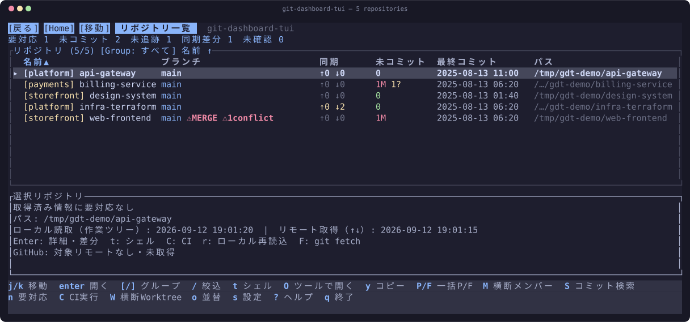
インストーラはプラットフォームを判定し、対応するリリースバイナリを取得し、リリースと同時に公開される SHA-256 と照合し、~/.local/bin（PATH上にあり書込可能なら /usr/local/bin）に配置します。sudo は一切使いません。
curl -fsSL https://raw.githubusercontent.com/orapli/git-dashboard-tui/main/install.sh | shスクリプトをシェルに流し込むのはそれを信頼するということなので、気になる場合は先に読んでください（短く、依存もありません）。INSTALL_DIR と VERSION で既定値を上書きできます。ビルド済みバイナリは Linux (x86_64, ARM64)、macOS (Apple Silicon, Intel)、Windows (x64) を用意しています。cargo install --git でも導入できます。
必要なもの: PATH の通った git。GitHub 連携列を使う場合は認証済みの gh CLI が追加で必要です。利用できない場合はGitHub情報が未確認となりますが、ローカルGit表示は使えます。
引数なしで起動し、A で走査するフォルダを入力します。検出一覧でリポジトリを選び、Enter でまとめて登録します。検出はバックグラウンドで進み、結果を順次表示します。走査中は Esc/q で中止、Enter で走査を止めて検出済みの選択分を登録します。空入力は走査開始前の取消です。1件だけなら a を使います。
登録後の案内には n（要対応）、Enter（詳細）、t（シェル）、?（ヘルプ）を表示します。Esc で閉じると、次回からは表示しません。
各リポジトリの解析が終わるごとに行が埋まり、結果はキャッシュされます。そのため次回の起動では、読み直しを待つ間の空欄ではなく、前回の内容が即座に表示されます。
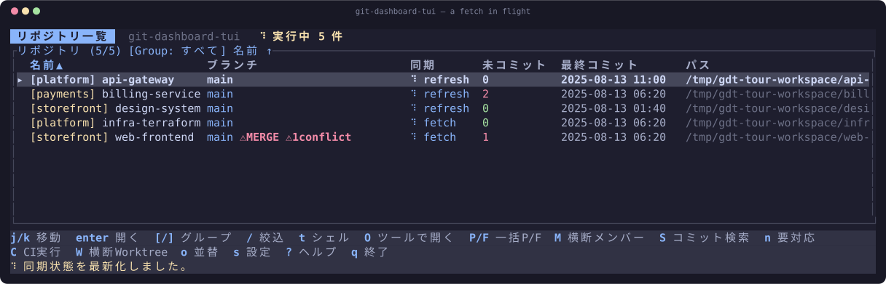
このマニュアルはv0.5.0を説明します。インストーラは最新の公開リリースを取得します。初回ガイド、Homeの取得状態、Oメニュー、W一覧、未追跡ファイルの差分、中止できる走査はv0.4.0に含まれます。v0.5.0ではタイトルバーのマウス移動と、設定・検出・横断メンバー・コミット検索のクリック操作を追加しています。変更履歴を参照してください。過去版は対応タグのREADMEで確認できます。開発用mainにはその後の未リリース変更が含まれる場合があります。コマンドライン（PATH と --json）、コミット検索のフィルタ、ブランチ単位のCIとPR情報の拡充、状態不明と正常を区別するHome行、画面別ヘルプ、y でのコピー、独自の作業ツールコマンド、そして更新処理の大幅な高速化が該当します。
cargo install --git https://github.com/orapli/git-dashboard-tui --branch main --lockedmainのビルドにはRust 1.88以上とネイティブのリンカ・ビルド環境が必要です。配布バイナリにはRustは不要です。インストーラでバージョンを固定する場合は sh を VERSION=v0.5.0 sh に置き換えます。
| 項目 | 意味 |
|---|---|
| 作業を始める | Homeで r を押してローカル情報を再読込します。リモート参照の更新が必要なら、1件は f、絞り込み中の一覧は F。n で要対応に絞り、理由を読んで Enter で詳細を開きます。 |
| 差分を確認して編集する | Status（1）でファイルを選び Enter。Diffでは n/p でhunk移動、b でblameを表示します。O のツールメニュー内で c を押してエディタを設定します。GUIでの編集後はHomeまたは詳細で r。端末内ツールから戻ると差分ファイル一覧も更新し、対象が残っていれば選択ファイルとスクロール位置を保ちます。 |
| Worktreeの作業を再開する | Homeの W でローカルWorktreeを一覧します。/ で検索、m で用途メモ、* でお気に入り、f で絞り込み。Enter は選択Worktreeのツールメニューです。詳細のWorktreesタブ（7）では Enter で直接シェルを開きます。 |
| 変更をリポジトリ横断で探す | Homeの S でコミットメッセージを検索します。同じプロンプトに author:・path:・since:・until: を書いて絞り込めます。それ以外の語はメッセージ本文として扱い、空白を含む値は引用符で囲みます。author: は members.json で統合した別名にも一致します。結果を選んで Enter で差分を開きます。検索対象はメッセージとコミット情報で、ファイル内容ではありません。貢献者の横断集計はHomeの M です。 |
キーの意味は画面で異なります。f はHomeでfetch、Diffで全文表示、Workspaceでお気に入り絞り込みです。? の画面別ヘルプ、または操作・設定リファレンスを参照してください。
| 項目 | 意味 |
|---|---|
| 要対応 | 未解決コンフリクト、進行中のGit操作、作業中のブランチで失敗扱いのCI結果（failure、cancelled、timed_out、action_required）、そもそも読み取れない登録、自分へのレビュー依頼、このブランチのPRへの変更要求が対象です。n で絞れ、各理由はパネルに文章で表示します。未コミット、ahead/behind、下書きPR、承認済みPRは意図的に含めません。behindだけでほぼ全リポジトリが該当してしまうためです。 |
| 未確認 | ローカル情報の未取得、GitHubの未導入・未認証・取得失敗・非対応・取得から5分以上の経過等を示します。クリーンやCI成功という意味ではありません。古いCI失敗は要対応と未確認の両方に含まれる場合があります。 |
| 集計範囲と時刻 | 集計は現在のグループ・文字検索の範囲で、要対応フィルタ適用前の値です。区分は重複します。ローカル取得時刻は解析時刻で、ネットワークfetch時刻ではありません。CI取得時刻も実行終了時刻とは異なります。狭い端末では詳細が隠れるため、必要なら広げてください。 |
| CIの対象とPR情報 | CIはghが返すそのリポジトリの現在のブランチの最新1実行です（ワークフローは限定しません）。対象ブランチは状態の隣に表示します。detached HEADは「問い合わせるブランチがない」独立した状態として扱い、リポジトリ全体の実行で代用しません。実行なし・取得失敗・タイムアウト・未認証・gh未導入・成功はいずれも別の状態です。C で実行ページを開けます。オープンPR件数に加えて、このブランチ自身のPRとその下書き状態・レビュー判定、自分のレビュー待ちPR件数もパネルに表示します。PRは最大100件を取得し、ちょうど100件の場合も 100+ と表示します。 |
| 再読込・fetch・pull | r はgit fetchせずローカル情報を読み直します。Homeの f/F は1件／絞り込み中のリポジトリのリモート参照をfetchします。p/P はpullし、merge/rebaseする場合があります。ahead/behindは手元のupstream参照との比較なので、再読込だけでは新しいリモートコミットを検出できません。 |
GitHubはプロセス内で成功後5分キャッシュします。再試行の間隔は原因によって変わります。通常の失敗は1分、タイムアウトは3分（10秒の上限を使い切った低速な回線であるため）、gh未導入・未認証は5分です（1分では解消しないため）。時間経過だけでは取得せず、その後の再読込で再試行します。Homeの自動更新は既定でオフで、設定の i でオフ／30秒／1分／5分を切り替えます。GitHubだけを強制更新するキーはありません。取得失敗時は前回成功値と古い取得時刻を保持します。再起動でGitHubのメモリ内キャッシュは消えますが、更新まではディスク上のスナップショットが表示される場合があります。
O → c でコマンドを入力し Enter で保存します。同じメニューの w で終了待機を設定します。以下は設定例で、すべてのエディタとの実機連携を検証したものではありません。
コマンドには {file}・{line}・{branch}・{hash} も使えます。code --goto "{file}:{line}" のように書けば、リポジトリルートではなく読んでいた行が開きます。その画面で値のないプレースホルダがある場合は、空文字で置換せず、どれが欠けているかを示して起動を中止します。x では同じメニューに独自コマンドを6件まで登録でき、1 – 6 として並びます。
| 項目 | 意味 |
|---|---|
| VS Code | code "{path}" — 待機オフ。対象を閉じてから復帰する場合は code --wait "{path}" と待機オンを組み合わせます。 |
| Neovim / Vim | nvim "{path}" または vim "{path}" — 待機オン。エディタ終了まで端末を渡します。 |
| 空白を含む絶対パス | "/opt/editor tools/editor" "{path}"。Windowsでは実行ファイルを指定します。例: "C:/Program Files/Neovim/bin/nvim.exe" "{path}"、待機オン。 |
コマンドは実行ファイルと引数に分解され、シェルスクリプトとしては実行しません。引用符には対応しますが、シェルのalias、$HOME、~、パイプ、リダイレクトは展開しません。実行ファイルの絶対パスか、絶対パスのPATH要素上にある正確なファイル名を使ってください。{path} がなければリポジトリパスを追加します。設定画面の c は別の外部diffコマンド用です。プレースホルダはリファレンスを参照してください。
| 項目 | 意味 |
|---|---|
| Linux / macOS | ローカルGit表示、シェル、エディタ、導入済みGitクライアントに対応します。シェルは$SHELL（未設定時 /bin/sh）。配布対象はLinux x86_64/ARM64とmacOS Intel/Apple Siliconです。 |
| Windows | 主要機能はWindows CIの対象で、配布対象はx64です。シェルはCOMSPEC（未設定時cmd.exe）。エディタ・Gitクライアントの検索はネイティブの.exe/.comを補完するため、PATH上の通常のlazygit.exe・gitui.exeをメニューから起動できます。任意のPATHEXTスクリプト形式は補完しません。エディタコマンドにはcode.cmd等の.cmdラッパーではなくネイティブ実行ファイルを指定してください。 |
| ssh://host/absolute/path | リモートの状態・ログ・差分・貢献者解析にはローカルのssh、接続先のgit、非対話の鍵認証が必要です。この形式の登録ではローカルシェル・エディタ・クライアント、GitHub PR/CI取得、横断Worktree一覧は非対応です。originがSSH URLのローカルクローンにはこの制限はありません。 |
| 検証範囲 | CIはLinux x86_64/ARM64・macOS・WindowsでRustのチェックとテストを実行します。新しいツール起動・Workspaceの操作はLinuxの端末とサンプルツールで確認しています。macOS/WindowsのGUI連携を実機検証済みという意味ではありません。 |
| 項目 | 意味 |
|---|---|
| GitHub情報が出ない・未認証・取得失敗 | TUIと同じ環境で gh auth status を実行します。リポジトリ内で gh pr list --limit 1 と gh run list --limit 1 を実行してアクセスを確認します。通常のローカル認証は gh auth login --hostname github.com。注入されたGH_TOKEN/GITHUB_TOKENは保存済み認証より優先するため、環境のシークレット管理で差し替えます。失敗の種類に応じた再試行間隔を待ってからHomeの r で再取得してください。正常な環境で「取得失敗」が続くのは従来の2秒という上限が原因のことが多く、現在は10秒です。実際のタイムアウトは「取得失敗」ではなくタイムアウトとして表示します。 |
| CIブランチが違う・値が古い | 表示ブランチ・取得時刻と gh run list --branch "$(git branch --show-current)" --limit 1 を比較します。CIは現在のブランチが対象なので、他人の失敗ブランチで警告が出ることはありません。detached HEADと表示される場合はブランチをチェックアウトしてください。成功キャッシュは5分なので経過後に再読込します。origin変更後はHomeの r で新しい接続先を確認します。キャッシュはローカルパス・リモート設定・問い合わせたブランチごとに分離されます。 |
| 再読込しても同期差分が変わらない | 対象内で git remote -v と git status -sb を確認します。Homeの f でリモート参照を更新してから状態を確認してください。再読込はfetchではなく、upstream未設定のブランチにはその比較がありません。 |
| ツールから戻っても変更が見えない | ツールの作業ディレクトリで git status --short と比較します。端末内ツール終了後は、シンボリックリンク経由の登録でもHomeと差分ファイル一覧を更新します。GUIで後から編集した場合はHomeまたは詳細で r を押し、Diffを開き直してください。ツールが選択したリポジトリ・Worktree内で編集しているかも確認します。 |
| ツールが未導入扱い・端末入力が競合する | Unixでは command -v nvim、Windowsでは where.exe nvim.exe で確認し、その実行ファイルの絶対パスをメニューの c に設定します。端末内エディタは w で待機をオンにしてください。シェルaliasや相対PATH要素は使いません。Windowsの制限は上表を参照してください。 |
| 登録や設定が保存されない | エラーと設定先ディレクトリの権限を確認します。GIT_DASHBOARD_CONFIG_DIRの指定先が存在しない場合、設定保存時に親ディレクトリも含めて作成します。最も近い既存の親ディレクトリに書込権限が必要です。リファレンスに設定分離コマンドがあります。調査時はconfig.json・members.json・prefs.jsonを保持してください。cacheの削除は設定リセットではありません。 |
| Worktreeがない・エラー件数が出る | 登録したローカルリポジトリごとに git -C /absolute/repository worktree list --porcelain を実行し、パスの存在と権限を確認します。SSH登録は対象外です。正常な行がある場合もエラーパネルを表示します。ディレクトリを参照できなかった行は unknown と表示し、クリーンなWorktreeではなくヘッダーの unknown に数え、理由を保持します。[/] で一覧できなかったリポジトリと、それらの行を順に確認してください。解決後はWorkspaceの r で再取得します。 |
| SSH登録を読み込めない | ssh -o BatchMode=yes host git --version、次に ssh -o BatchMode=yes host "git -C /absolute/repository status --short" を確認します。鍵・接続先の信頼設定・リモートパスはTUIの外で設定してください。TUIはSSHパスワードを要求しません。 |
| 起動できない・新機能がない・macOSでブロックされる | command -v git-dashboard-tui（Windows: where.exe git-dashboard-tui）でPATH上に古い実行ファイルがないか確認します。導入先をPATHに追加するか絶対パスで起動してください。上のバージョン説明と導入したリリースを照合します。macOSのGatekeeperにブロックされた場合はシステム設定 → プライバシーとセキュリティから許可してください。 |
解決しない場合はOS、導入方法とリリース／コミット、画面と操作キー、期待結果と実際の結果、エラー全文を報告してください。ログを共有する前に認証情報や非公開リポジトリURLを除いてください。
1行が1リポジトリです。意味は色が担っているので、列を順に読み解くのではなく一目で状況をつかめます。
| 項目 | 意味 |
|---|---|
| 名前 | 設定した表示名。前に黄色でグループ名が付きます。 |
| ブランチ | 現在のブランチと、その後に付くバッジ。操作が中断されたままの場合に ⚠MERGE / ⚠REBASE / ⚠CHERRY-PICK / ⚠REVERT と、コンフリクト件数が出ます。列幅が足りない場合でも残るよう、バッジを先に描画しています。 |
| 同期 | upstream に対する先行・遅れのコミット数。どちらかが 0 でなければ黄色になります。比較対象がない場合 — リモートがない、あるいは一度も push していないブランチ — は ↑0 ↓0 を装わず ↑? ↓? と表示し、どちらであるかは下のパネルに出ます。pull / fetch 実行中はスピナーに変わります。 |
| 未コミット | 未コミットの変更数。0 なら緑。追跡対象の変更と未追跡は Status タブと同じ記号で分けて示すため、編集2件とビルド生成物5件は 7 ではなく 2M 5? と表示します。 |
| 最終コミット | 全 ref のうち最新コミットの日時。 |
| PR / CI | GitHub リモートがあり gh が認証済みの場合の、オープン中の PR 数とそのリポジトリが今いるブランチの最新 CI 結果。failure / cancelled / timed_out / action_required は「要対応」として扱われます。 |
読み取れなかった登録は、正常なリポジトリでも読み込み中でもない独立した状態です。セルには ⚠ パスなし / ⚠ Git管理外 / ⚠ 読取不可 と表示し、パネルに理由と対処を全文表示し、n でも抽出します。パネルは混同しやすい2つの時刻も分けて表示します。作業ツリーを最後に読んだ時刻と、git が最後にリモートと通信した時刻（FETCH_HEAD の時刻）です。後者が ahead/behind の鮮度であり、fetch でしか新しくなりません。
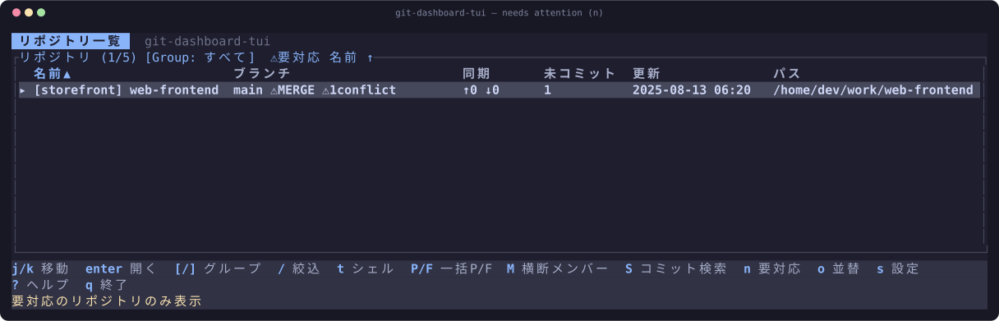
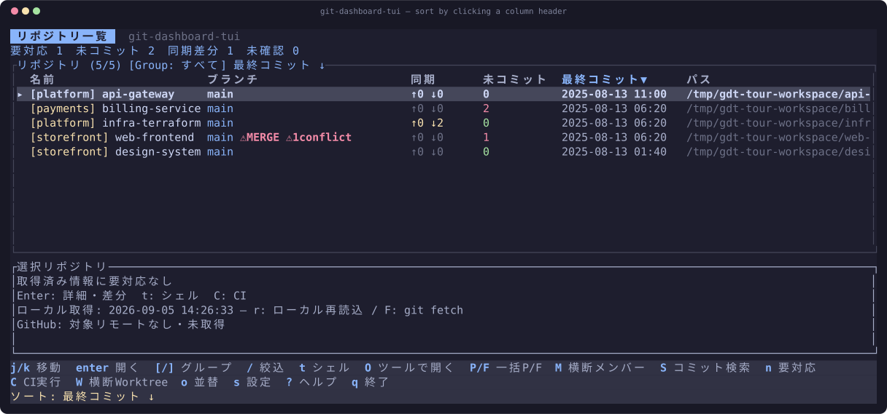
| キー | 動作 |
|---|---|
| Enter | 選択したリポジトリを開く |
| a / A | パスで追加 / フォルダを走査して一括追加 |
| d / e | 削除 / 表示名の変更 |
| [ / ] | グループフィルタを切り替え |
| / | 名前・パス・グループで絞り込み |
| n | 要対応フィルタの切り替え |
| C | 現在のブランチの最新CI実行を開く |
| y | 選択中の項目の識別子をコピー |
| O | 作業ツールの起動メニュー |
| W | ローカルWorktreeを横断表示 |
| o | 並び順を切り替え |
| p / f | 選択リポジトリを pull / fetch |
| P / F | 絞り込み中の全リポジトリを pull / fetch |
| S / M | リポジトリ横断のコミット検索 / メンバー分析 |
| t | そのリポジトリでシェルを開く |
| r / s | 全行の再読み込み / 設定画面 |
7つのタブがあり、1〜7・Tab・クリックで移動できます。端末幅が狭い場合は、末尾のタブが消えるのではなくラベルが短縮されます。
リポジトリを開くと、作業ツリーに見るべきものがある場合 — 未コミットの変更、未解決のコンフリクト、中断された merge / rebase — は Status に、それ以外は Commits に着地します。Home 行に出ていた内容が理由で開くことが多く、その内容は Commits では見えないためです。判定は開いた時点の1回だけで、あとから読み込みが終わってもタブが勝手に動くことはありません。
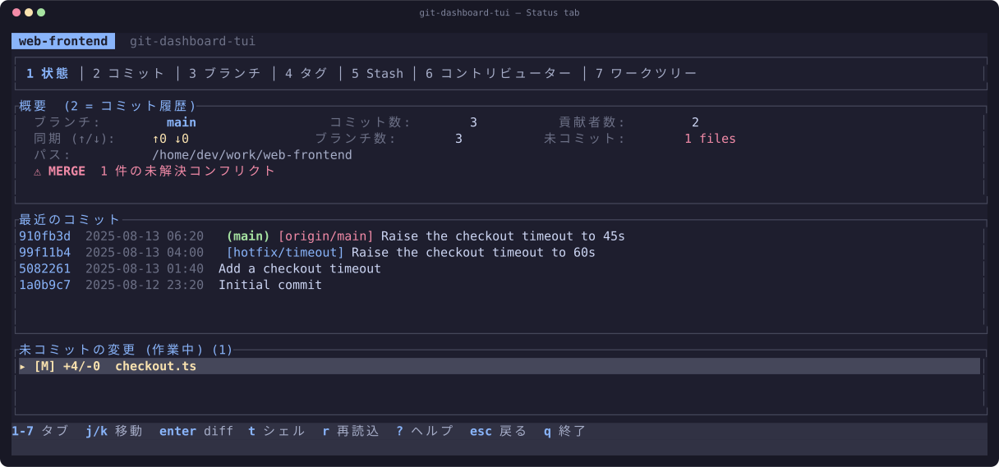
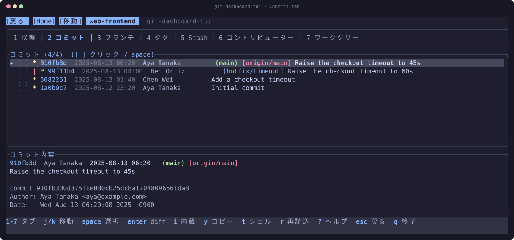
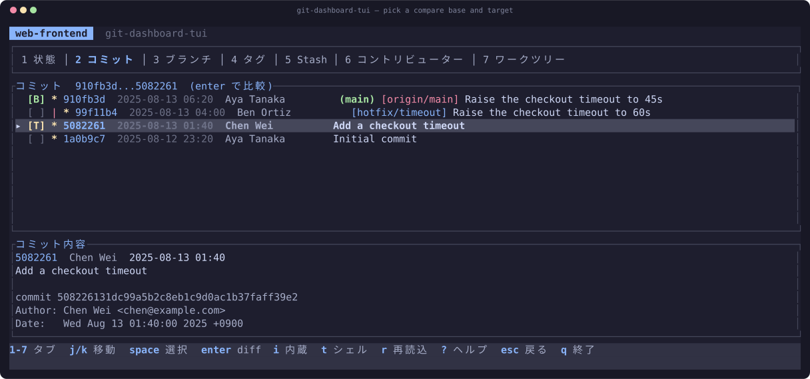
[ ] をクリックするか space を押してください。1つ目が基準 [B]、2つ目が対象 [T] になり、Enter でその範囲の差分を開きます。選択済みの行を再クリックすると解除されます。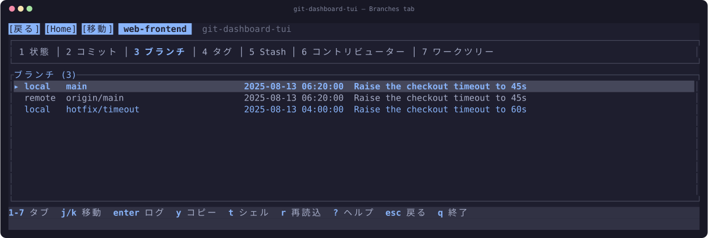
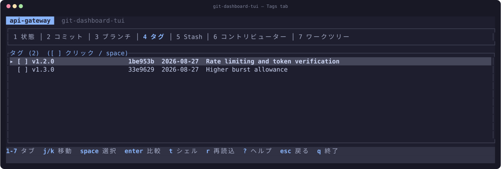
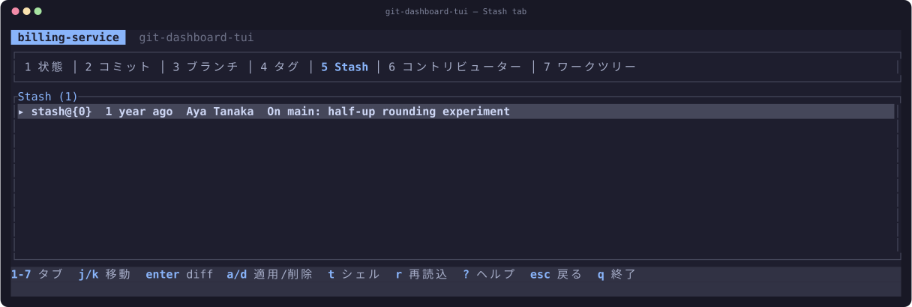
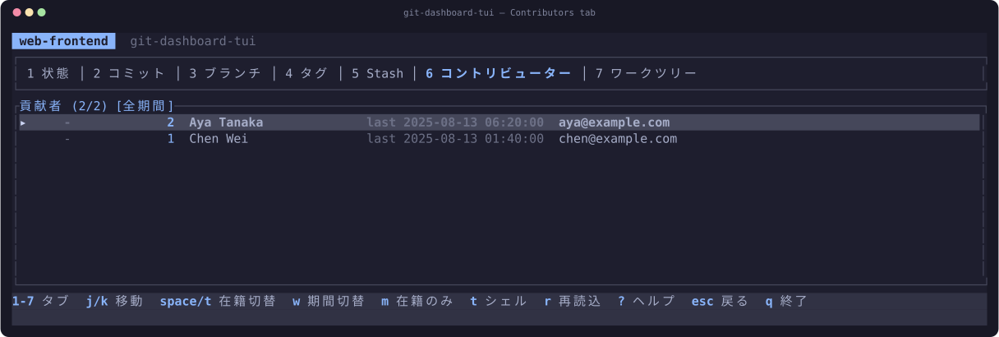
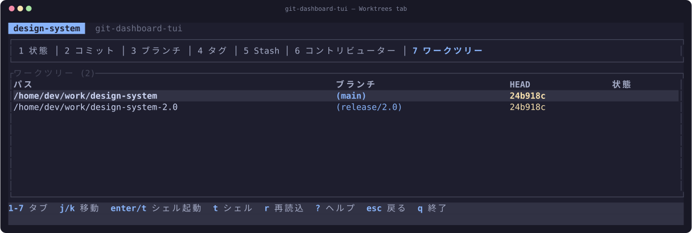
3つのペインで構成されます — 変更ファイル、選択ファイル内のハンク、差分本体。Tab でペイン移動、n / p でハンク間を移動します。
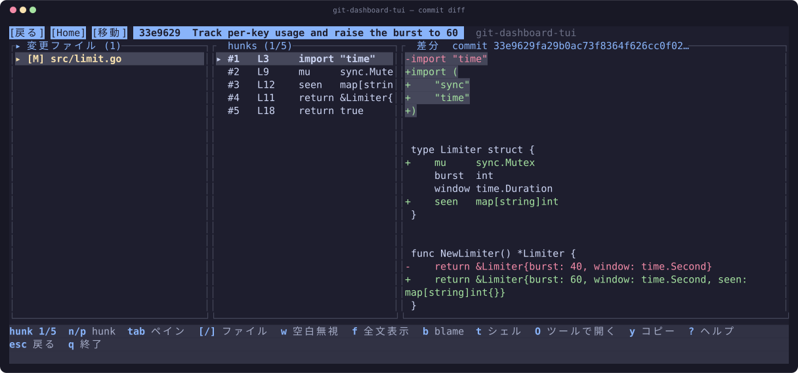
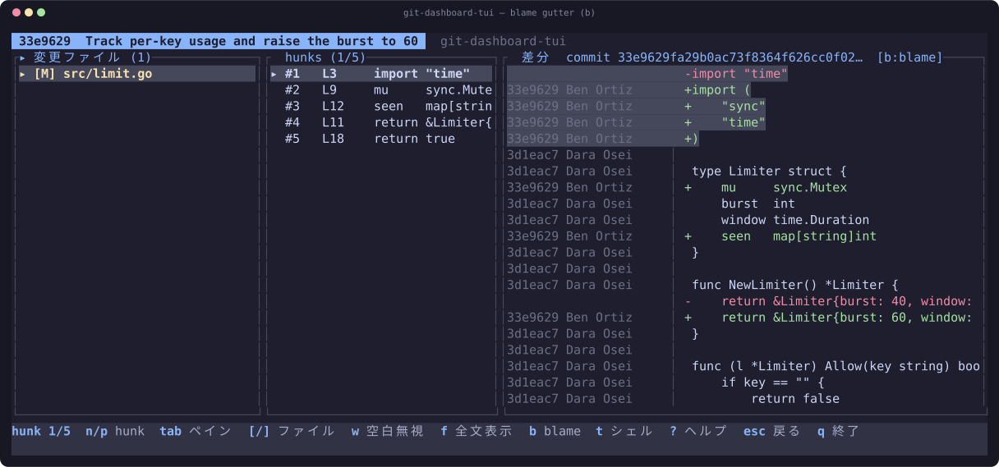
| キー | 動作 |
|---|---|
| w | 空白のみの差分を無視 |
| f | 変更周辺だけでなくファイル全体を表示 |
| b | blame 表示の切り替え |
| [ / ] | 前 / 次の変更ファイル |
| n / p | 次 / 前のハンク |
{path} {range} {base} {target} {file} のプレースホルダが使えます。プログラムは PATH から解決するか絶対パスで指定してください。相対パスは拒否されます — 子プロセスは表示中のリポジトリを作業ディレクトリとして動くため、そのリポジトリが自分のものとは限らないからです。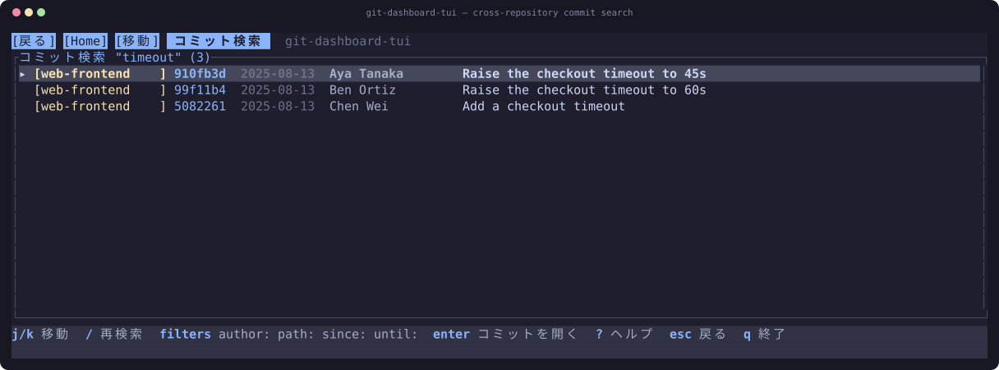
同じ1行のプロンプトでフィルタを指定できます — author:・path:・since:・until:。それ以外の語はこれまでどおりメッセージ本文なので、fix: auth や fix(auth): もそのまま検索できます。空白を含む値は author:"Jane Doe" のように引用符で囲み、トークン全体を囲めば "path:" という文字列自体を検索します。author: は members.json で統合した別名にも広がるため、正式名でその人の別名のコミットも見つかります。件数は1リポジトリ50件・全体300件が上限で、達した場合はどちらの上限か、何リポジトリが該当したかを見出しに表示します。打ち切られた結果が完全な結果に見えることはありません。
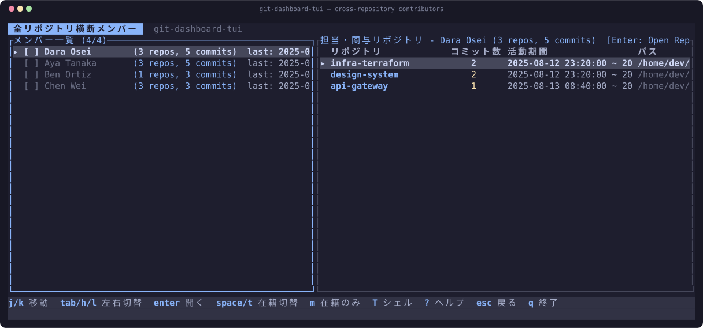
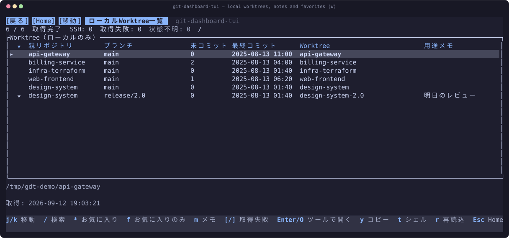
Homeの W でローカルWorktreeを横断表示します。親リポジトリとそのWorktreeを両方登録しても同じパスは1行です。最初に登録された親、ブランチ、未コミット数、HEADのコミット日時、ディレクトリ名を表示し、選択行のフルパスは詳細欄で確認できます。SSHは対象外として件数を示します。
/ でパス・ブランチ・用途メモを検索し、m でメモを編集します。* でお気に入りを切り替え、f で絞り込みます。メモとお気に入りは正規化したローカルパスをキーに設定へ保存します。Enter または O でツールメニュー、t でそのWorktreeのシェルを開けます。r のバックグラウンド再取得中も操作できます。取得中は前回値が残る場合があります。ディレクトリを参照できなかった行は unknown と表示し、正常な件数に混ぜずヘッダーの unknown に数えます。正常な行を選択中も [/] で、一覧を取得できなかったリポジトリと、それらの行の理由を順に確認でき、クリーンなWorktreeと区別します。表示するのはGit状態と本人のメモであり、AIエージェントの活動状況ではありません。
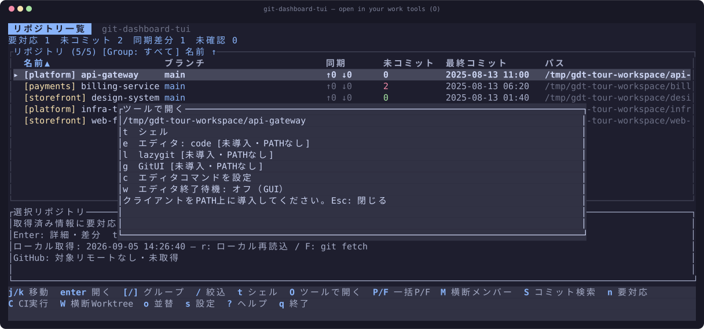
Home・詳細・diffで O を押し、t（シェル）、e（エディタ）、l（lazygit）、g（GitUI）を選びます。未導入ツールは明示されるのでPATH上に導入してください。SSHリポジトリのローカルツール起動は非対応です。
メニューの c でエディタを設定できます。引数の引用符と {path} に対応し、プレースホルダがなければリポジトリパスを1引数として追加します。端末内エディタは w で終了待機をオンにします。GUIは既定で待機しません。端末内ツール終了後は表示・入力を復帰し、選択リポジトリを再取得します。GUIで後から編集した内容は r で再取得してください。コマンドは絶対パスかPATH上の名前を指定します。
コマンドはリポジトリルート以外も参照できます。{path} はリポジトリまたは Worktree、{file} は表示中ファイルの絶対パス、{line} は差分が表示している行、{branch} と {hash} は今見ている対象です。code --goto "{file}:{line}" と書けば読んでいた行がそのまま開きます。その画面で値のないプレースホルダがある場合は、空文字に置換せず、どれが欠けているかを示して起動を中止します。引数が1つ消えると後ろの引数がその位置にずれ込み、空文字ではツールが黙って別のものを開いてしまうためです。置換する値は登録しただけのリポジトリ由来のテキストなので、制御文字を含む値や引数を - で始めてしまう値は拒否し、プレースホルダが実行ファイル名になることもありません。
x（このメニューまたは設定画面）で、既定の4つに加えて独自コマンドを6件まで登録できます。それぞれ名前・コマンド行・終了待機の設定を持ち、1 – 6 として並びます。y は選択中の対象の識別子 — コミットハッシュ、ブランチ名、タグ名、stash の参照名、作者のメールアドレス、ファイルパス — をコピーするので、移動先のシェルで打ち直す必要がありません。端末へは OSC 52 シーケンスとして送るため既定で無視する端末も多く（tmux では set-clipboard on が必要）、確認メッセージは書き込み成功ではなく「送信した」ことのみを伝えます。
git-dashboard-tui PATH は、そのリポジトリを選択した状態で起動します。登録済みリポジトリの隣に (未登録) として表示・選択し、config.json には書き込みません。使い捨てのクローンで実行しても設定が勝手に増えず、横断機能は従来どおり登録済みの全リポジトリを対象にします。すでに登録済みのパスは行を重複させず既存の行を選択し、リポジトリでないパスは端末を初期化する前にエラーになります。
git-dashboard-tui . # このリポジトリでダッシュボードを開く
git-dashboard-tui --json | jq . # 登録済みの全リポジトリ
git-dashboard-tui . --json | jq .repositories[0].conflicts--json は状態のスナップショットを出力して終了します。端末を初期化しないためパイプに流せ、ネットワークアクセスを一切行いません。数秒ごとにステータスラインから呼ばれる用途で GitHub API を叩き続けるわけにはいかないためです。そのため CI と PR の項目はダッシュボードが書き込んだキャッシュから読み、値がない場合や古い場合はそれらしいゼロを返さずその旨を示します。ローカルのGit状態はダッシュボードと同じコマンドでその場で取得します。
schema（git-dashboard-tui.status-snapshot）と schema_version を持つオブジェクトで、利用側を壊さずに項目を追加できます。バージョンを上げるのは互換性を壊す変更のときだけです。読み取れなかったリポジトリはゼロではなく ok: false と理由で報告し、upstream がない場合の ahead/behind は 0 ではなく null です。終了コードは、解釈できないコマンドラインが 2、設定または指定パスを読めなかった場合が 1 です。項目の一覧はリファレンスにあります。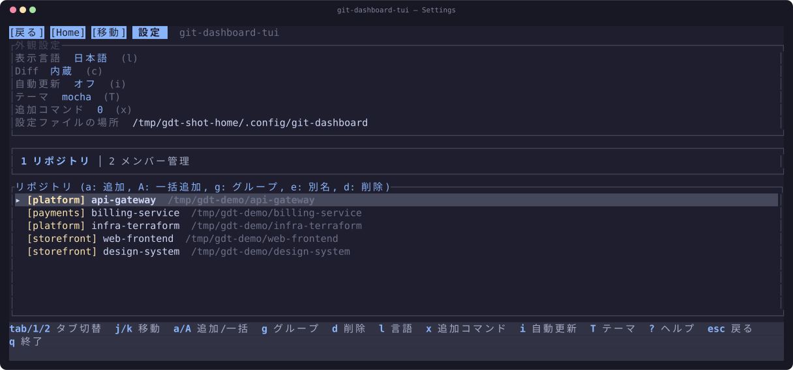
設定は OS の設定ディレクトリに保存されます — macOS は ~/Library/Application Support/com.git-dashboard.git-dashboard/、Linux は ~/.config/git-dashboard/、Windows は %APPDATA%\git-dashboard\git-dashboard\config\。
| 項目 | 意味 |
|---|---|
| config.json | 登録済みリポジトリ（名前・パス・グループ）。 |
| members.json | チームメンバーと、そこへ統合するコミット作者の別名。 |
| prefs.json | 表示言語・テーマ・サイドバー・差分トグル・最近の比較・並び順・更新間隔・外部diffコマンド・エディタと終了待機・独自の作業ツールコマンド・初回案内の表示済み状態・Worktreeメモとお気に入り。 |
| tech_rules.json | 言語・フレームワークのバージョン検出ルール。 |
| cache/ | ダッシュボード行とリポジトリ解析結果のキャッシュ。削除しても次回更新時に再生成されます。 |
gh の未導入・未認証は5分です（1分では解消しないため）。gh 1回あたりの上限は10秒です。Homeにはローカル読取時刻、リモート情報の古さ、CI結果が対象とするブランチ、未認証・取得失敗・古いキャッシュを表示します。C でCI実行ページを開けます。PRを100件取得した場合は 100+ と表示します。リポジトリを登録するとその中で git を実行することになり、git はそのリポジトリ自身の設定を読みます。いくつかの設定キーは任意コマンドの実行に十分なため、毎回の実行時に無効化しています — core.fsmonitor、core.sshCommand、uploadpack.packObjectsHook、protocol.ext.allow。加えて --no-ext-diff --no-textconv を渡し、diff.external や textconv ドライバが起動しないようにしています。git の safe.directory はこの範囲をカバーしません。
リポジトリの内容も同様に信頼していません。ファイル本文・コミットメッセージ・ブランチ名・作者名はいずれも画面に届き、端末は送られたものを実行します。そのため git の出力が文字列になる唯一の地点でエスケープシーケンスを除去しています。またファイル内容を表示する箇所ではタブを展開しており、タブでインデントされたファイルがペインの外へ文字を押し出すことはありません。
- で始まるホストを持つ ssh:// は ssh にオプションとして渡ってしまうため、ホストを許可リストで検証しています。複数の git コマンドが1本の SSH 接続を共有する際、出力を区切る文字列は呼び出しごとの予測不能な nonce です — 固定文字列だと、それを名前にしたコミット作者に偽装される恐れがあるためです。
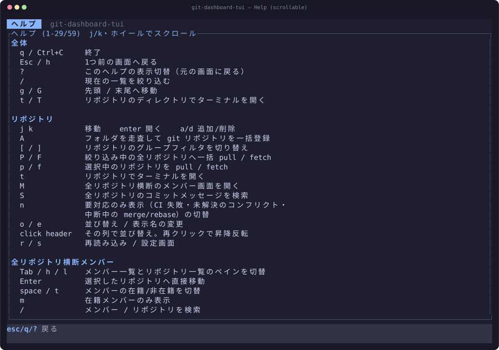
一覧はフラットではありません。? を押した画面のキーを先頭に置き、続いて全画面共通のキー、その下に区切りを挟んでほかの画面 — Worktree一覧、コミット検索、リポジトリ検出、ブランチログ、ツールメニューを含みます — が並びます。タイトルにはどの画面のヘルプかを表示し、すべてスクロールで到達できます。
| キー | 動作 |
|---|---|
| q / Ctrl+C | 終了 |
| Esc / h | 1つ前の画面に戻る |
| g / G | 先頭 / 末尾へ |
| t / T | リポジトリのディレクトリでシェルを開く |